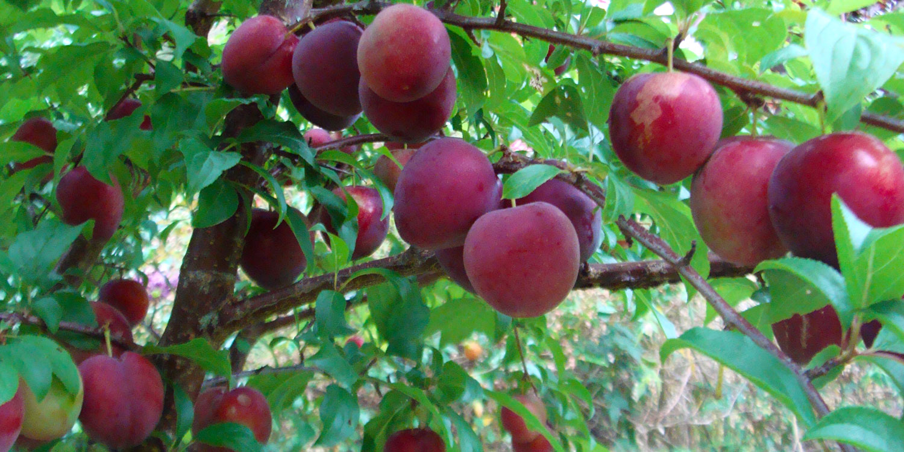

News
The Great Gnome Hunt!
That’s right, it’s back! Come in store for our famous Easter egg gnome hunt between the 13th and 23rd of April, sign up to the little grower’s club and get a free Easter egg*! Our new resident gnomes are now named after our favourite bee-friendly plants, so your little one can learn something new about the best flowers to feed the bees this winter.
PLUS enter our instore gnome colouring competition to be in the draw to win one of eight kids gardening pack worth over $50!
To Prune or Not to Prune
The first time I pruned unsupervised it seemed an easy task. I began staring at a quince thicket. But then, with secateurs and chainsaw in hand, I quickly demolished the thicket to uncover the pear tree below (Quince is often used as the rootstock that pear trees (the sion wood) is grafted on to).
But in general, I tend to avoid this sort of drastic approach. Which isn't too difficult, as long as you initially establish the right shape, pruning in later years is fairly easy.
However, if you leave it untouched for years, or prune it into the wrong shape, it can definitely become tricky and requires you to make more compromises around the shape of the tree.
When first starting to prune, take your time, take a deep breath, and think before you cut. It's also worth remembering that you can often you train existing branches rather than make drastic cuts to get the shape you desire.
And if in doubt, step back, look at the overall shape, and think. It's definitely easier to take more off than put branches back on.
